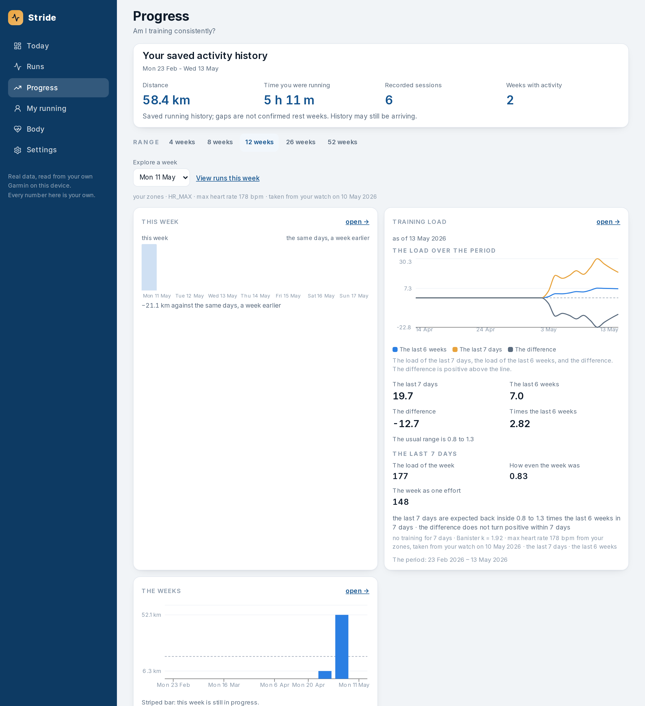
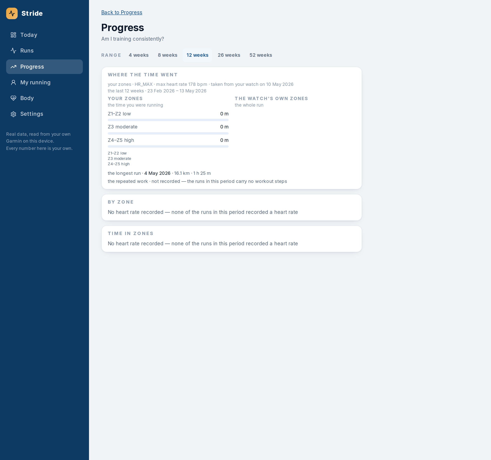
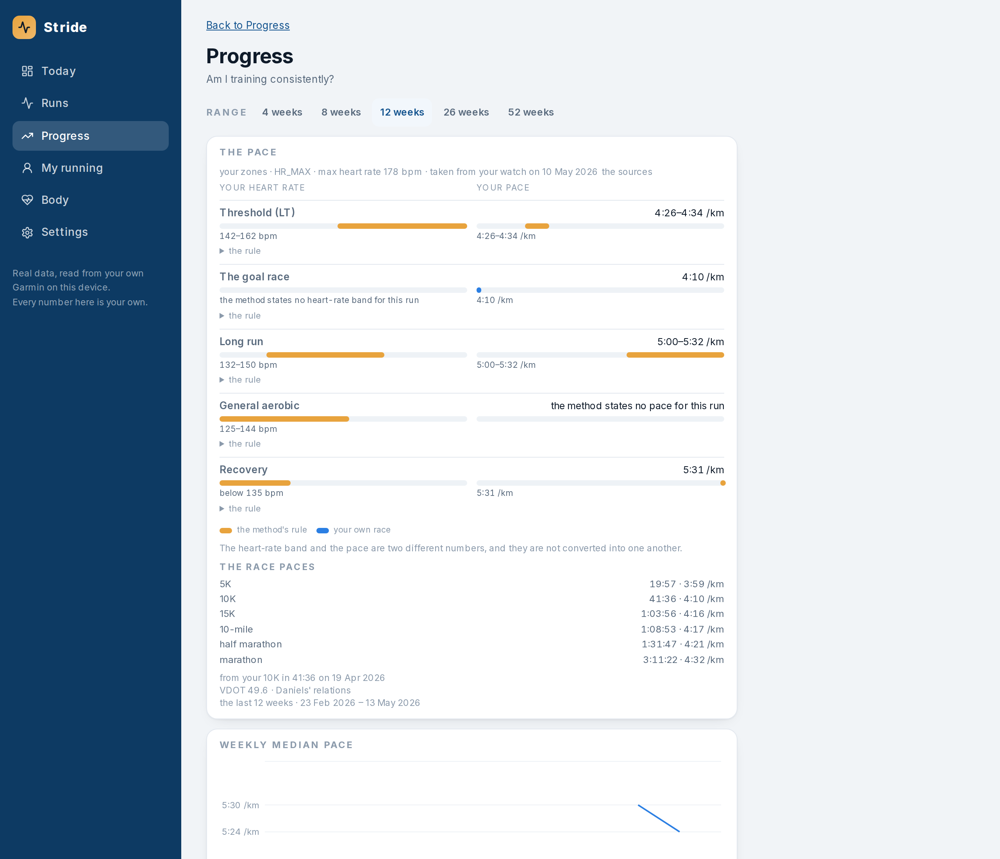
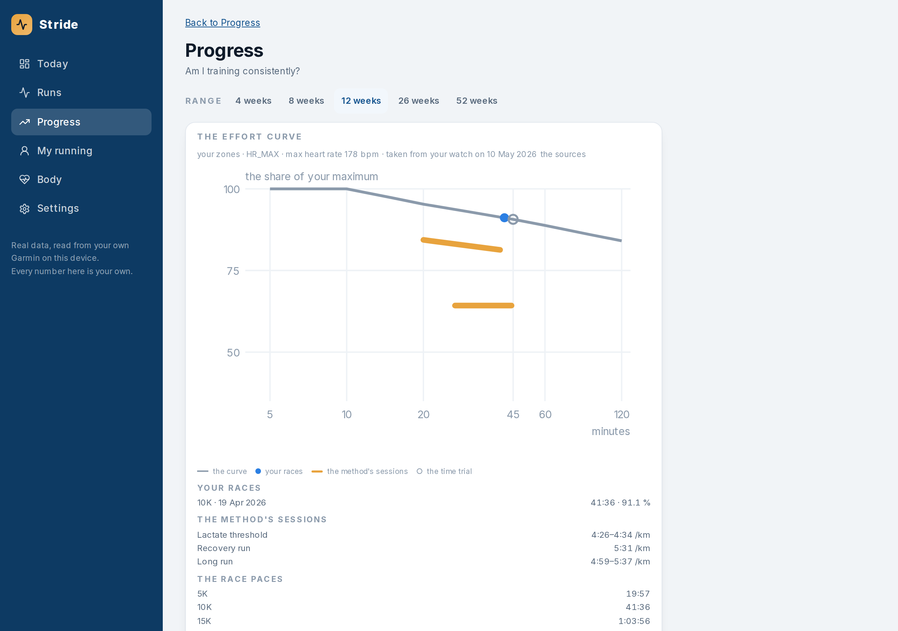
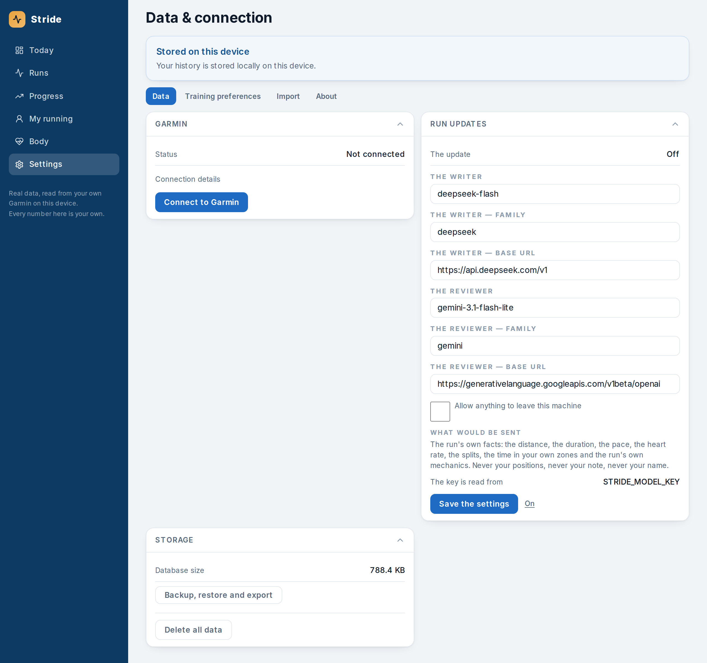
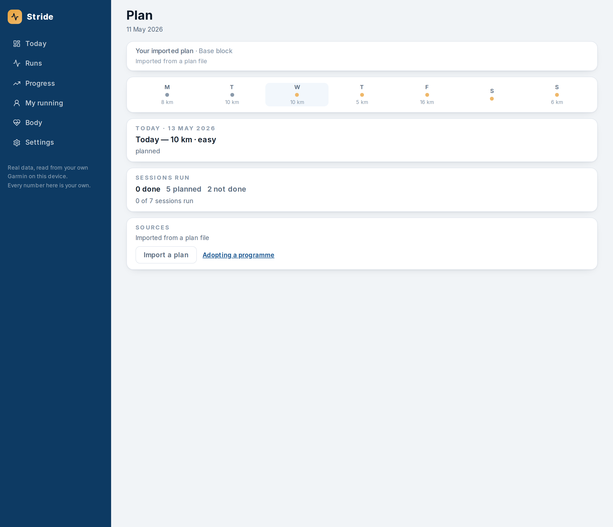
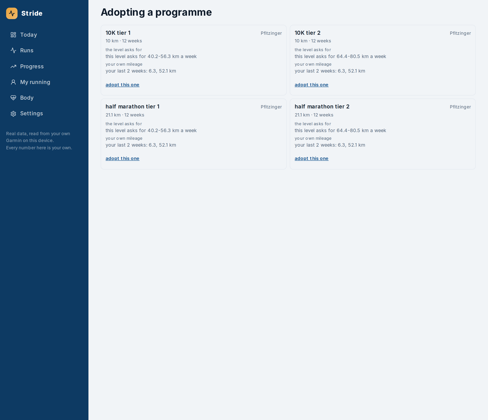

The real app, served from the built rig's branch, with the seeded athlete. Every screenshot is the shipped code, not a mock-up.
The wall — eleven cards24 became 11. Six on Progress, five on the athlete profile.

The ledger's two blocksYour zones over the time you were running; the watch's own zones over the whole run; the overlap underneath.

The ladderEvery rung with its pace, its band, and the rule it comes from.

The cost curveThe athlete's races, the method's sessions, the field test's marker — one curve.

The thresholdFour candidates, the choice in force, the dated history. The note about what a candidate cannot know is not on the card.

The plan's weekThe kinds of run, the distances, the paces — and the threshold the plan was paced with.

Adopting a programmeThe four programmes, the tier's entry requirement beside the athlete's own mileage, unranked.
